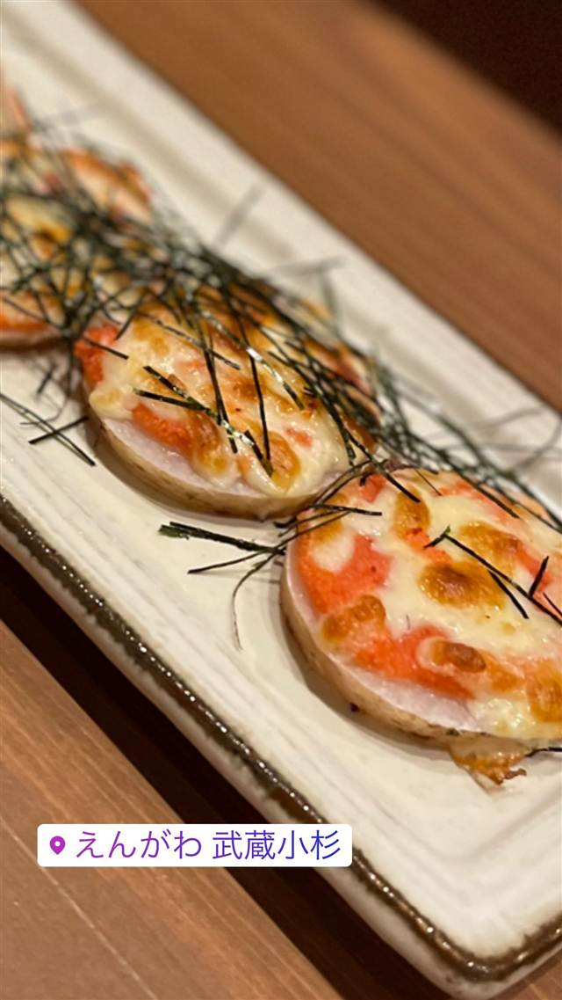

えんがわ 武蔵小杉
東急線の高架下で味わう九州食材の炙り明太子
えんがわ 武蔵小杉
新丸子駅西口すぐ、東急線の高架下にある九州料理の居酒屋。運営する株式会社ローカルダイニングが2009年に溝の口で開いた「えんがわ」の系列店で、武蔵小杉店は2019年6月にオープン。厳選した九州食材の炭火・炉端焼きと、名物の炙り明太子が楽しめる。
TRIVIA
豆知識
- 「えんがわ」は2009年の溝の口店が1号店で、武蔵小杉店は4店舗目にあたる
- 東急線の高架下（ガード下）にある店
REVIEWS
世間の評判
3.43食べログ
手作りシュウマイと豊富な日本酒
- 自分で仕上げる手作りシュウマイなど料理の質の高さを評価する声が多い
- 日本酒やクラフトビールなど酒類が充実していると評価する声が多い
- 予約なしだと19時頃には満席になるほど混み合うという声が非常に多い
- メニュー表を見てほしいと言われるなど接客がそっけないという声もある
食べログ 口コミ265件
| 創業 | 武蔵小杉店は2019年6月オープン |
|---|---|
| 系譜 | 運営会社は株式会社ローカルダイニング。「えんがわ」シリーズは2009年の溝の口店を1号店に、阿佐ヶ谷(2011年)、荻窪(2016年)と展開後、武蔵小杉店(2019年)を出店 |
| 看板 | 炙り明太子、九州食材の炉端焼き |
| こだわり | 厳選した九州食材を使った炭火・炉端焼き |
| どこから | 23区の外れ・近郊 |
| 営業時間 | 月〜金 17:00-23:00 土 15:00-23:00 日 休み |
| 予算 | 夜 ¥3,000～¥3,999 |
| 定休日 | 日曜 |
| 場所 | 新丸子 神奈川県川崎市中原区新丸子東 |
| メモ | 新丸子駅西口から徒歩2分、東急線の高架下（ガード下）に立地 |
食べたもの：明太子料理